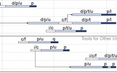

Information Visualization Evaluation in Large Companies: Challenges, Experiences and Recommendations


Venue. Information Visualization (2011)
Abstract. We examine the implications of evaluating data analysis processes and information visualization tools in a large company setting. While several researchers have addressed the difficulties of evaluating information visualizations with regards to changing data, tasks, and visual encodings, considerably less work has been published on the difficulties of evaluation within specific work contexts. We specifically focus on the challenges, which arise in the context of large companies with several thousand employees. Based on our own experience from a 3.5-year collaboration within a large automotive company, we first present a collection of nine information visualization evaluation challenges. We then discuss these challenges by means of two concrete visualization case studies from our own work. We finally derive a set of 16 recommendations for planning and conducting evaluations in large company settings. The set of challenges and recommendations and the discussion of our experience are meant to provide practical guidance to other researchers and practitioners, who plan to study information visualization in large company settings.
Link to this page: